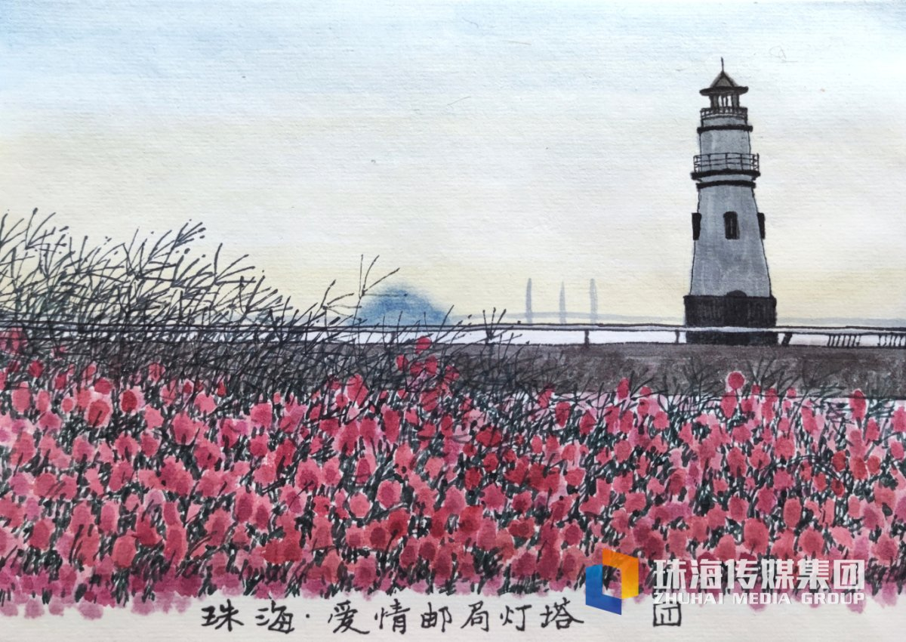
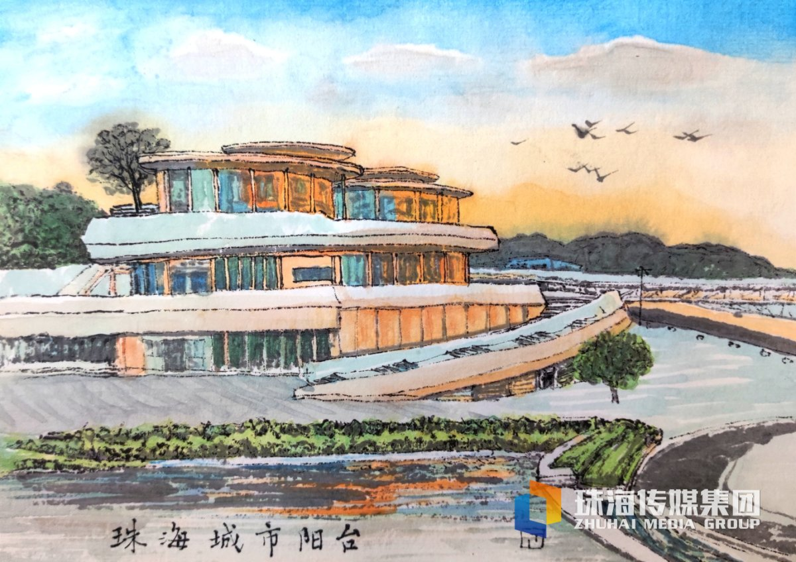
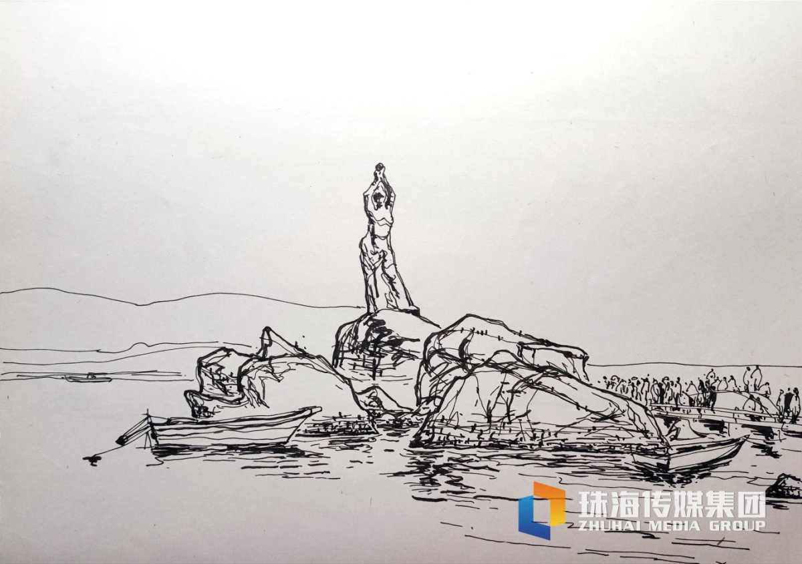
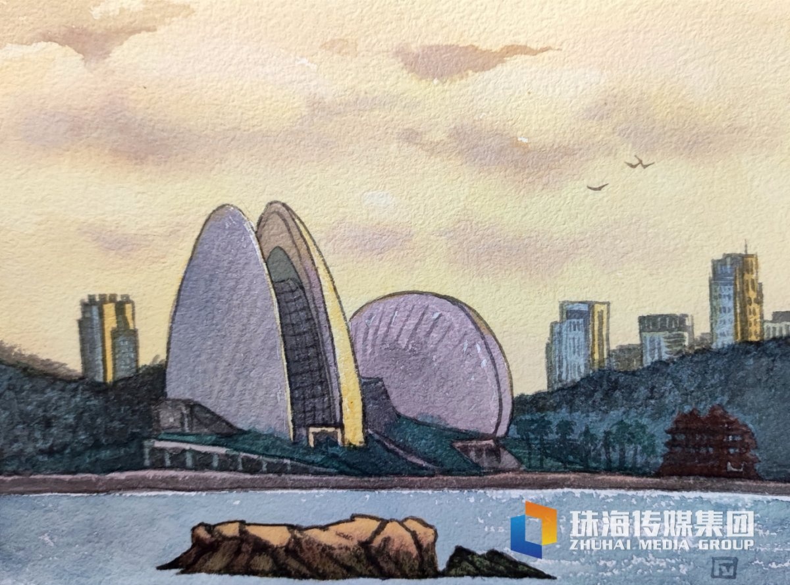

09:30 · 第一站
爱情邮局与灯塔
先在海滨泳场和灯塔附近拍照；如果天气好，海面和灯塔很适合广角构图。
从爱情灯塔一路向北，经过城市阳台、珠海渔女，最后在日月贝看灯光亮起。点开任意地点，即可查看图片、位置和导航。
由南向北安排，减少来回折返
点击下方地点查看详情
每个地点都有独立图片与地图

先在海滨泳场和灯塔附近拍照；如果天气好，海面和灯塔很适合广角构图。

观景平台、香炉湾沙滩和商圈集中在一起，适合午餐和短暂休息。

珠海最经典的城市地标，停留时间不必太长，沿情侣路顺路拍照即可。

从野狸岛看建筑轮廓，傍晚等日落与亮灯，作为当天路线的收尾。